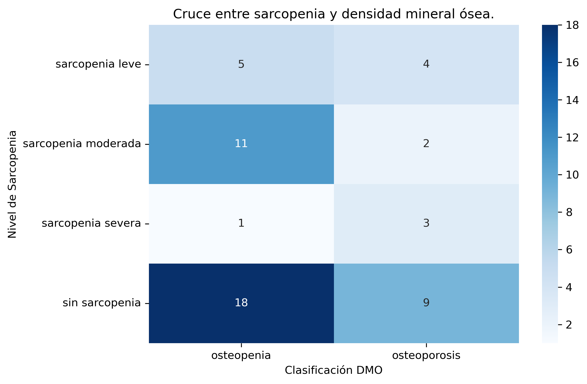

Estudio: Dr. Arturo Rizo Topete.
Análisis: Christian Campos
Definición: pacientes con diagnóstico de sarcopenia junto con osteoporosis u osteopenia.
Variables utilizadas:
Resultados:
Interpretación:
Se observa que 26 de los 53 pacientes presentan tanto sarcopenia como osteopenia u osteoporosis, lo que representa el 49% de la muestra. Este hallazgo sugiere que la coexistencia de ambas condiciones es común en la población evaluada, y puede justificar su análisis conjunto.
Interpretación:
La mediana de edad es mayor en el grupo con osteosarcopenia (~68 años) en comparación con quienes no la presentan (~64 años). Aunque hay superposición, los valores centrales y extremos sugieren una posible asociación entre mayor edad y presencia de osteosarcopenia.
Interpretación:
Los datos muestran que la mayoría de los pacientes con sarcopenia moderada presentan también osteosarcopenia. En contraste, los pacientes sin sarcopenia no tienen casos registrados de osteosarcopenia, lo cual apoya la definición lógica de esta variable derivada.

Interpretación:
El cruce de variables indica que los pacientes con sarcopenia moderada son más frecuentes entre quienes tienen osteopenia. También se observan combinaciones de sarcopenia severa con osteoporosis. Estos patrones respaldan la consistencia interna del diagnóstico combinado (osteosarcopenia) y pueden servir como base para análisis posteriores.
A partir del cruce entre los niveles de sarcopenia y la clasificación de densidad mineral ósea, se identificaron 26 pacientes con criterios compatibles con osteosarcopenia. Esta condición afecta prácticamente la mitad de la muestra analizada.
Los patrones observados en las visualizaciones sugieren que la osteosarcopenia es más frecuente a mayor edad y con niveles más avanzados de sarcopenia. Además, la consistencia entre las variables usadas refuerza la validez del criterio adoptado para identificarla.
Definición: Este objetivo busca clasificar a los pacientes según las tres condiciones clínicas identificadas en el estudio:
Las condiciones no son excluyentes. Un paciente puede tener más de una simultáneamente.
Variables utilizadas:
Resultados:
Interpreteación:
Los datos muestran que la osteopenia es la condición más prevalente en la muestra, presente en 66% de los pacientes. La osteosarcopenia afecta aproximadamente a la mitad de los pacientes, mientras que la osteoporosis representa el 34%.
Dado que las condiciones no son excluyentes, es posible que existan intersecciones entre estos grupos, por lo que este análisis permite entender la magnitud individual de cada condición, pero no su combinación exacta.
Este análisis permitió obtener un conteo individual de los pacientes que presentan osteopenia, osteoporosis y osteosarcopenia. La osteopenia fue la condición más frecuente, seguida de la osteosarcopenia. Estos resultados no reflejan exclusividad entre categorías, pero permiten tener un panorama inicial sobre la prevalencia de cada condición en la muestra.
Definición: Este objetivo está orientado a una acción clínica. Desde el análisis de datos no es posible prescribir ni sugerir tratamientos, pero sí identificar patrones funcionales que orienten a posibles decisiones.
Variables utilizadas:
Criterio de análisis:
Se evaluó la distribución del estado físico en pacientes con y sin osteosarcopenia, con el objetivo de detectar posibles perfiles con mayor necesidad de intervención funcional.
Se utiliza el término "criterio de análisis" para señalar decisiones técnicas tomadas desde los datos.
Interpretación:
El gráfico muestra que los pacientes con estado físico bajo tienen una mayor proporción de casos con osteosarcopenia. En cambio aquellos con estado físico alto presentan predominantemente perfiles sin osteosarcopenia.
Este patrón sugiere que el nivel de rendimiento físico puede estar asociado con la presencia de esta condición combinada.
A partir de la variable Clasificacion de estado físico, se identificó que los pacientes con osteosarcopenia presentan con mayor frecuencia una capacidad funcional reducida. Este hallazgo puede ser útil para priorizar intervenciones de rehabilitación en función de la clasificación funcional del paciente.
Definición: Este objetivo busca identificar si existen patrones en el estado nutricional que puedan orientar hacia una intervención alimentaria, especialmente en pacientes con osteosarcopenia.
Variables utilizadas:
Criterio de análisis:
Se examinaron las distribuciones de IMC y del porcentaje de grasa corporral en pacientes con y sin osteosarcopenia, con el fin de detectar perfiles de riesgo o indicios que sugieran la necesidad de intervención nutricional.
Se utiliza el término "criterio de análisis" para señalar decisiones técnicas tomadas desde los datos.
Interpretación:
Se observa una mayor proporción de pacientes con osteosarcopenia en las categorías de obesidad 2 y obesidad 3, mientras que el grupo sin osteosarcopenia predomina en el sobrepeso. Esto podría sugerir una asociación entre niveles más elvados de IMC y mayor prevalencia de osteosarcopenia.
Interpretación:
El gráfico muestra que los pacientes con osteosarcopenia presentan un procentaje de grasa corporal más alto que aquellos sin esta condición. La mediana se encuentra desplazada hacia valores mayores, lo cual indica que al menos la mitad de estos pacientes tienen un porcentaje de grasa elevado. Además el rango intercuartílico (la distancia entre el primer y tercer cuartil) también es mayor, lo que sugiere más variabilidad y que un segmento aplio del grupo presenta niveles altos de adiposidad. Los valores atípicos o extremos refuerzan esta dispersión.
A través del análisis del IMC y del porcentaje de grasa corporal, se observan diferencias entre los pacientes con y sin osteosarcopenia. Los datos muestran una mayor concentración de casos con osteosarcopenia en las categorías más altas de IMC, así como una mayor mediana de grasa corporal en ese grupo Estos hallazgos no establecen causalidad, pero aportan indicios de una posible relación entre composición corporal y presencia de osteosarcopenia.
Definición: Este objetivo busca observar cómo se comportan diferentes métodos diagnósticos de sarcopenia en la muestra. No se busca vaidad los métodos clínicamente, sino detectar consistencias, patrones o discrepancias entre ellos.
Variables utilizadas:
Categóricas:
Numéricas:
Interpretación:
35 pacientes presentan baja probabilidad de sarcopenía según SARC-F, mientras que 18 tienen alta probabilidad. Este instrimento, basado en autoevaluación funcional, identifica una proporción menor de posibles casos respecto a otros métodos.
Interpretación:
La gran mayoría (44 pacientes) fue clasificacda como "normal", mientras que 8 fueron detectados con sarcopenia grado 1 y sólo 1 con grado 2. Esto podría indicar que éste criterio es más convervador o que la muestra tiene características que lo afectan.
Interpretación:
Hay distribución cercana entre pacientes con resultado normal (30) y aquellos con resultado sarcopenia (23). Esto indica que la fuerza de prensión muestra un equilibrio en la detección dentro de esta muestra.
Interpretación:
Similar al patrón anterior, 31 pacientes fueron clasificados como normal, mientras que 22 mostraron indicadores compatibles con sarcopenia. Esto sugiere que la velocidad también ofrece una distribución equilibrada como criterio.
Interpretación:
La distribucióin de la circunferencia de pantorrilla es similar entre grupos. No se observa una clara separación entre quienes tienen y no osteosarcopenia. La mediana es apenas menor en el grupo con osteosarcopenia, pero con una mayor dispersión.
Interpretación:
Los pacientes con osteosarcopenia tienden a presentar una fuerza de prensión más baja. Las medianas entre ambos grupos están separadas, y el grupo con osteosarcopenia muestra también menor rango intercuartílico, indicando menor variabilidad.
Interpretación:
Los pacientes con osteosarcopenia tienden a tener velocidades de marcha más bajas. La mediana y el rango intercuartílico del grupo se sitúan en valores inferiores, lo que sugiere una menor capacidad funcional en términos de desplazamiento. Esto se refuerza por la presencia de varios valores atípicos bajos en este grupo.
El análisis comparativo de los métodos disponibles para detectar sarcopenia mostró resultados razonablemente consistentes. A través de los métodos categóricos (SARC-F, IMME, fuerza de prensión, velocidad de la marcha), se identificó un porcentaje importante de pacientes con algún grado de deterioro funcional, mientras que los métodos numéricos mostraros diferencias claras entre quienes presentan osteosarcopenia y quienes no.
En particular, los pacientes con osteosarcopenia tienden a tener menor fuerza de prensión, menor velocidad de marcha y una ligera tendenceia a menor circunferencia de pantorilla. Estas observaciones sugieren que los métodos analizados responden en la dirección esperada segun el estado clínico de los pacientes.